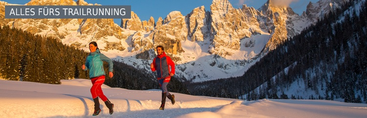

Alpinrunner
Winterausrüstung Trailrunning und Schneeschuh

Donnerstag, 08. Dezember ab 18.00 Uhr bei Marksport in Chur
Winterrunning und Schneeschuhlaufen
Alles was man an Ausrüstung so braucht für schöne Schnee-Erlebnisse erklärt uns Mario und sein Team bei Marksport. Kommt vorbei und lasst euch beraten
Salomon Winterrunning Schuhe und Bekleidung
TSL Schneeschuhe und Zubehör
Kahtoola Micro Spikes
Raidlight neue Laufbekleidung aus Frankreich
Schöffel aktuelle und funktionelle Outdoor Bekleidung
Odlo Underwear
Icebreaker Underwear Merinowolle
kommst du auch kurz vorbei ?
Dieses Formular läuft weiterhin auf der bestehenden Website von alpinrunner.ch.
Zum Formular